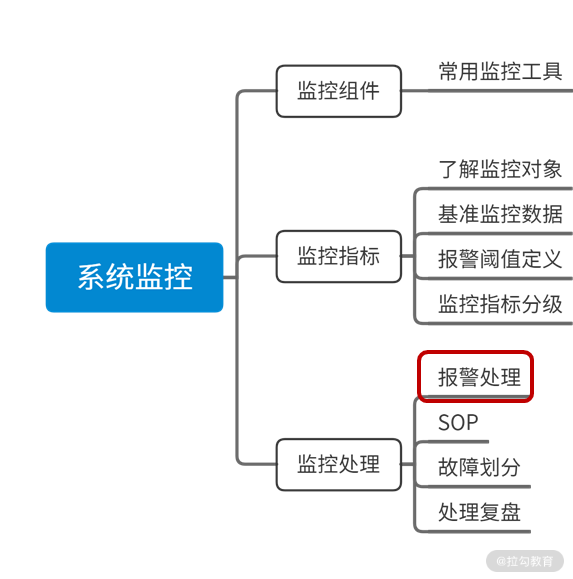

- 00 开篇词：搭建分布式知识体系，挑战高薪 Offer.md.html
- 01 如何证明分布式系统的 CAP 理论？.md.html
- 02 不同数据一致性模型有哪些应用？.md.html
- 03 如何透彻理解 Paxos 算法？.md.html
- 04 ZooKeeper 如何保证数据一致性？.md.html
- 05 共识问题：区块链如何确认记账权？.md.html
- 06 如何准备一线互联网公司面试？.md.html
- 07 分布式事务有哪些解决方案？.md.html
- 08 对比两阶段提交，三阶段协议有哪些改进？.md.html
- 09 MySQL 数据库如何实现 XA 规范？.md.html
- 10 如何在业务中体现 TCC 事务模型？.md.html
- 11 分布式锁有哪些应用场景和实现？.md.html
- 12 如何使用 Redis 快速实现分布式锁？.md.html
- 13 分布式事务考点梳理 + 高频面试题.md.html
- 14 如何理解 RPC 远程服务调用？.md.html
- 15 为什么微服务需要 API 网关？.md.html
- 16 如何实现服务注册与发现？.md.html
- 17 如何实现分布式调用跟踪？.md.html
- 18 分布式下如何实现配置管理？.md.html
- 19 容器化升级对服务有哪些影响？.md.html
- 20 ServiceMesh：服务网格有哪些应用？.md.html
- 21 Dubbo vs Spring Cloud：两大技术栈如何选型？.md.html
- 22 分布式服务考点梳理 + 高频面试题.md.html
- 23 读写分离如何在业务中落地？.md.html
- 24 为什么需要分库分表，如何实现？.md.html
- 25 存储拆分后，如何解决唯一主键问题？.md.html
- 26 分库分表以后，如何实现扩容？.md.html
- 27 NoSQL 数据库有哪些典型应用？.md.html
- 28 ElasticSearch 是如何建立索引的？.md.html
- 29 分布式存储考点梳理 + 高频面试题.md.html
- 30 消息队列有哪些应用场景？.md.html
- 31 集群消费和广播消费有什么区别？.md.html
- 32 业务上需要顺序消费，怎么保证时序性？.md.html
- 33 消息幂等：如何保证消息不被重复消费？.md.html
- 34 高可用：如何实现消息队列的 HA？.md.html
- 35 消息队列选型：Kafka 如何实现高性能？.md.html
- 36 消息队列选型：RocketMQ 适用哪些场景？.md.html
- 37 消息队列考点梳理 + 高频面试题.md.html
- 38 不止业务缓存，分布式系统中还有哪些缓存？.md.html
- 39 如何避免缓存穿透、缓存击穿、缓存雪崩？.md.html
- 40 经典问题：先更新数据库，还是先更新缓存？.md.html
- 41 失效策略：缓存过期都有哪些策略？.md.html
- 42 负载均衡：一致性哈希解决了哪些问题？.md.html
- 43 缓存高可用：缓存如何保证高可用？.md.html
- 44 分布式缓存考点梳理 + 高频面试题.md.html
- 45 从双十一看高可用的保障方式.md.html
- 46 高并发场景下如何实现系统限流？.md.html
- 47 降级和熔断：如何增强服务稳定性？.md.html
- 48 如何选择适合业务的负载均衡策略？.md.html
- 49 线上服务有哪些稳定性指标？.md.html
- 50 分布式下有哪些好用的监控组件？.md.html
- 51 分布式下如何实现统一日志系统？.md.html
- 52 分布式路漫漫，厚积薄发才是王道.md.html
49 线上服务有哪些稳定性指标？
在分布式高可用设计中，系统监控非常重要，系统监控做好了，可以提前对异常情况进行报警，避免很多线上故障的产生。系统监控做得好不好，也是评价一家互联网公司基础建设水平的重要标准，今天一起来讨论一下，线上服务都有哪些监控指标，又应该如何展开呢？
系统监控的重要性
我的一个朋友是做底层开发工作的，包括内部数据库和微服务的中间件，前不久入职了一家互联网创业公司，这家公司虽然成立不久，但是业务发展很快。最近这几天他和我吐槽，公司的系统监控做得很差，线上经常有各种故障，不得不经常救火，工作非常疲惫。
听了这位朋友的感受，不知道你是否也有过类似的经历，系统监控等稳定性工作，看似离业务开发有点远，但其实是非常重要的，系统监控做得不好，开发人员需要花很多的时间去定位问题，而且很容易出现比较大的系统故障，所以越是在大公司里，对监控的重视程度就越高。
各种监控指标可以帮助我们了解服务运行水平，提前发现线上问题，避免小故障因为处理不及时，变成大故障，从而解放工程师的人力，我在之前的工作中，曾经专门做过一段时间的稳定性工作，现在把自己的一些经验分享给你。
在实际操作中，系统监控可以分为三个方面，分别是监控组件、监控指标、监控处理，在这一课时呢，我先和大家一起梳理下监控指标相关的知识，在接下来的第 44 课时，我将分享常用的监控组件，以及监控报警处理制度。

稳定性指标有哪些
稳定性指标，这里我按照自己的习惯，把它分为服务器指标、系统运行指标、基础组件指标和业务运行时指标。
每个分类下面我选择了部分比较有代表性的监控项，如果你还希望了解更多的监控指标，可以参考 Open-Falcon 的监控采集，地址为 Linux 运维基础采集项。
服务器监控指标
服务器指标主要关注的是虚拟机或者 Docker 环境的运行时状态，包括 CPU 繁忙程度、磁盘挂载、内存利用率等指标。
服务器是服务运行的宿主环境，如果宿主环境出问题，我们的服务很难保持稳定性，所以服务器监控是非常重要的。常见的服务器报警包括 CPU 利用率飙升、磁盘空间容量不足、内存打满等。
| 监控项 | 指标描述 |
|---|---|
| CPU 空闲时间 | 除硬盘 IO 等待时间以外其他等待时间，这个值越大，表示 CPU 越空闲 |
| CPU 繁忙程度 | 和 CPU 空闲时间相反 |
| CPU 负载 | CPU 负载（如果是 Docker，此指标收集物理机的 load）和 CPU 利用率监控 |
| CPU 的 iowait | 在一个采样周期内有百分之几的时间属于以下情况：CPU 空闲且有仍未完成的 I/O 请求 |
| CPU 的 system | CPU 用于运行内核态进程的时间比例 |
| CPU 的 user | CPU 用于运行用户态进程的时间比例 |
| load1 | 表示最近 1 分钟内运行队列中的平均进程数量 |
| load3 | 表示最近 5 分钟内运行队列中的平均进程数量 |
| load15 | 表示最近 15 分钟内运行队列中的平均进程数量（在 falcon 系统里） |
| 磁盘使用情况 | 磁盘使用情况，磁盘已用，未使用容量 |
服务器的指标，在实际配置中，需要根据服务器核心数不同，以及不同的业务特点配置不同的指标策略。比如，如果是一个日志型应用，需要大量的磁盘资源，就要把磁盘报警的阈值调低。
系统运行指标
系统指标主要监控服务运行时状态、JVM 指标等，这些监控项都可以在 Open-Falcon 等组件中找到，比如 JVM 的 block 线程数，具体在 Falcon 中指标是 jvm.thread.blocked.count。下面我只是列举了部分监控指标，具体的你可以根据自己工作中应用的监控组件来进行取舍。
| 监控项 | 指标描述 | 说明 |
|---|---|---|
| JVM 线程数 | 线程总数量 | 关注整体线程运行情况 |
| JVM 阶段线程增长 | 累计启动线程数量 | 线程应该尽量复用，因此不宜持续创建新线程 |
| JVM 死锁 | 死锁个数 | 线程死锁，一般都不能忍受 |
| JVM 的 block 线程数 | blocked 状态的线程数 | blocked 状态的线程过多，说明程序遭遇剧烈的锁竞争 |
| GC 的次数 | GC 的次数 | 垃圾回收的这几个指标，通常会综合来看，在进行调优时非常重要 |
| GC 时间 | GC 的时间 | |
| 年轻代 GC | 年轻代 GC 的次数 | |
| 老年代 GC 次数 | 年老代 GC 的次数 | |
| 老年代 GC 时间 | 年老代 GC 的时间 |
基础组件指标
在基础组件这里，主要包括对数据库、缓存、消息队列的监控，下面我以数据库为例进行描述，虽然各个中间件对数据库监控的侧重点不同，但是基本都会包括以下的监控项。如果你对这部分指标感兴趣，我建议你咨询一下公司里的 DBA 了解更多的细节。
| 监控项 | 指标描述 |
|---|---|
| 写入 QPS | 数据库写入 QPS |
| 数据库查询 QPS | 查询 QPS |
| 数据库的死锁 | 死锁处理不及时可能导致业务大量超时 |
| 数据库慢查询 QPS | 慢查询 QPS |
| 数据库的活跃连接数 | 数据库的活跃连接数 |
| 数据库的总连接数 | 数据库的总连接数 |
| 数据库 Buffer Pool 命中率 | 可能引起数据库服务抖动，业务系统不稳定 |
在进行数据库优化时要综合这部分指标，根据具体业务进行配置。
业务运行时指标
业务运行时指标和上面其他分类的指标是不同的，需要根据不同的业务场景来配置。
举个例子，你现在开发的是一个用户评论系统，那么就需要关注每天用户评论的请求数量、成功率、评论耗时等。业务指标的配置，需要结合各类监控组件，在指标的选择上，通常需要结合上下游各个链路，和产品设计、运营同学一起对齐，明确哪些是核心链路，并且进行指标的分级。
总结
这一课时讨论了系统监控的重要性，以及系统监控指标的分类，常见的监控指标及其含义。
对稳定性指标的了解，看起来是系统运维负责的工作，但实际上对开发同学也同样重要，打个比方，系统监控指标好像就是医院里体检时的各项化验数据，只有全面了解这些数据，才能更好地明确身体健康情况。
在你的工作中，是如何对稳定性监控指标进行配置的，在配置告警阈值时考虑了哪些因素，应用了哪些监控组件呢？欢迎留言进行分享。